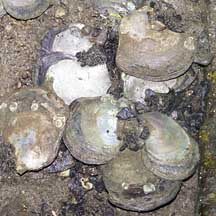
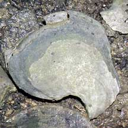
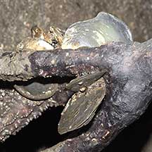
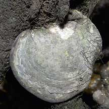
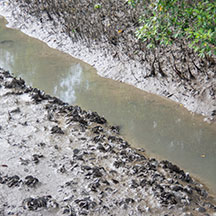
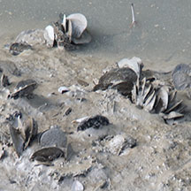

|
|
| bivalves text index | photo index |
| Phylum Mollusca > Class Bivalvia > Family Pteriidae |
| Leaf
oyster Isognomon ephippium, Isognomon spathulatus Family Pteriidae updated May 2020 Where seen? These rather large flat clams are commonly seen in our mangroves, scattered like white coins among mangrove tree roots. Sometimes also seen growing in clusters on rocks or sea walls in sheltered areas near freshwater inflows (brackish water). It is also called the Saddle tree oyster. Isognomon spathulatus looks very much like Isognomon ephippium but they can be distinguished by features of their shells, these are outlined in Singapore Biodiversity Records 2020: 183-186. Isognomon spathulatus is usually found on higher shores settling among mangrove vegetation, while Isognomon ephippium is usually found on lower shores and exposed on mudflats as well as estuarine sections of man-made canals. Features: 6-10cm. The two-part shell is flat, thin but strong, and usually semi-circular, with a flat base where the hinge is. Usually white or greyish. It sticks to tree roots with byssus threads, thus giving the common name of tree oyster. Often found in clusters. Human uses: In Thailand, they are regularly collected for food and marketed. |
|
 Lim Chu Kang, Aug 05  |
 Growing on a mangrove tree.  Sungei Buloh Wetland Reserve, Nov 03 |
 Growing along a muddy mangrove creek.  Changi Creek mangroves, May 17 |
*Species are difficult to positively identify without close examination.
On this website, they are grouped by external features for convenience of display.
| Leaf oysters on Singapore shores |
On wildsingapore
flickr
|
| Other sightings on Singapore shores |
|
Links
References
|